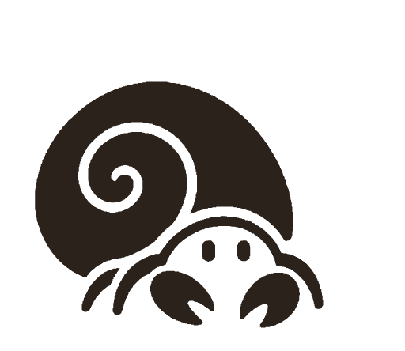
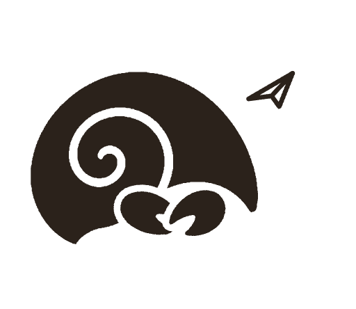
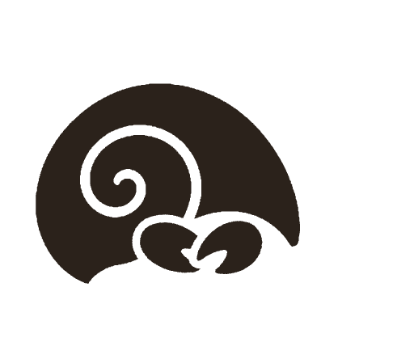
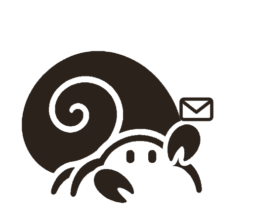
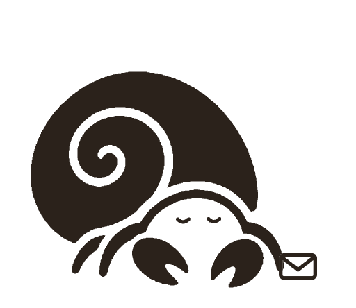

Progress, achievements and the road to V1 of the open-source AI agent that lives entirely on your phone.
22pull requests merged
366automated tests passing
95/100best blind-eval score
39/40on the Galaxy S26

Built by Dojo Coding · Apache 2.0 · Project report
01 · What Hermit is
A personal agent that never leaves your phone.

Fully on-device
The model runs on the phone through Tether's QVAC runtime. No server sees your messages, your memory or your calendar.

The cage
Every action has a risk class. Anything that sends, pays or signs in waits for your fingerprint, and every step lands in a signed log.
Open source
Apache 2.0, built in the open. Anyone can read exactly what Hermit does with their data.
The bet
Cloud agents (Claude Duet, ChatGPT Dots, Grok bot, Muse, Instinct) run frontier models in data centers. Hermit runs a 0.8 billion parameter model on a phone and closes the gap with a state-of-the-art harness: the code around the model does the routing, the time math and the safety, so the small model only decides what code can't.
ModelBotPsy-0.8B (Qwen3.5 fine-tune), Q4_K_M, about 530 MB
Wave 1 · the first win 12 slices, 30 stories. Code built; phone gate not yet passed
V1 overall 59 slices, 120 stories. Waves 2 to 6 are next
Harness quality Best score on 100 cases the harness never saw
How these are measured: wave progress counts slices and stories from the PRD (not effort). "Built" means merged on master with tests; "verified" means proven on the Galaxy S26.
03 · Phases
V1 ships in seven waves, then V2 and V3.
W0
Preflight and contracts
CI, dev build, contracts, schema
100%
W1
The first win
Chat, memory, reminders, calendar, WhatsApp read and reply, approvals, signed log
85%
W2
Voice, email, connectors
Model proven on device, turn control, de-risking spikes
3%
W3
Eyes
Web reading, night shift, other apps, settings, accessibility
4%
W4
Hands I
Vault, form fill, logins, web tasks, MCP client
0%
W5
Hands II
USD₮ wallet, caps, Keystore approvals, x402
0%
W6
Changing phones and distribution
Phone transfer, Play internal track, reproducible APK, website
V3 Keep watch, Mac powers, family sharing, confidential-cloud Boost · 11 stories
04 · Wave 1, the first win
Twelve slices: every one built, three already proven on the phone.
SL-09Spike S1: BotPsy runs on the S26Proven on the S26
SL-10Spike S2: encrypted database (op-sqlite, SQLCipher)Proven on the S26
SL-11Spike S3: model bundle and loader in the Expo buildProven on the S26
SL-02Chat on the phone's model, streaming, offlineBuilt · phone check pending
SL-03Clarifying questions and failed turnsBuilt · phone check pending
SL-04Remember, recall and forget with provenanceBuilt · phone check pending
SL-05Reminders fire offline; calendar reads and addsBuilt · phone check pending
SL-07Exact reply approved with a fingerprint, then sentBuilt · phone check pending
SL-08Activity log verifies its signed chainBuilt · phone check pending
SL-01First launch, verified model download, permissionsBuilt · phone check pending
SL-06WhatsApp messages captured as untrustedBuilt · phone check pending
SL-12Spike S4: notification listener reply actionBuilt · untested on device
The W1 gate: the first-win journey script passes end to end on the Galaxy S26. What remains is device verification, chiefly the WhatsApp listener (spike S4) and the full journey.

05 · The harness
Same small model, a much smarter agent.
Instead of a bigger model, Hermit wraps BotPsy in code: a deterministic router, time parsing in Spanish and English, argument normalizers, constrained fallbacks, a clause planner and fixed clarifying questions. The model only decides what code cannot.
Blind holdout · 100 cases the harness never saw
Before
73
Now
95/100
First-win suite · 40 cases (Mac)
Before
22
Now
40/40
Same harness on the untrained base Qwen3.5-0.8B · blind
Before
60
Now
87/100
On the Galaxy S26 · first-win 40
Before
31
Now
39/40
Model-agnostic: the harness lifts an untrained model 27 points, so the gains come from Hermit's design, not from one model's quirks.
06 · Eval scoreboard
Measured, not assumed: about 430 cases and 30 conversations.
Virtual-assistant settime, memory, calendar, messaging, chat, ask, decline
122/124
Development holdoutwritten blind, now used for development
Memory and decline setremember, recall, forget, and saying no
58/60
Multi-turn trajectories (4 seeds)30 whole conversations through the real runtime
116/120
Parity scenariosmatching Instinct, Grok bot and Muse on the VA menu
7/7
Privacy scenariosinjections, leaks and approvals
6/6
The blind holdout is the honest judge: its cases are never read or tuned on. Every other set is development data. Numbers from the Mac eval lab, which runs the exact phone model file.

07 · On the Galaxy S26
Real phone, real heat, real numbers.
39/40first-win cases correct on the phone
7.0 smedian first action, fast route (11.3 s with full thinking)
7 to 13×fewer prompt tokens with the new stable prompt prefix (Mac)
61 °Cchip peak in a sustained eval; the thermal guard stops runs automatically
Speed work done
Device-adaptive runtime: threads, batch and thinking budget per phone and per temperature
KV cache on, with a byte-stable prompt prefix and a warm-up when a chat opens
Live progress: instant intent, a "Pensando" panel, streamed answers
Still to prove on the phone
The in-chat cache gain (second message in the same conversation)
Why fast-route calls run to their token cap on QVAC
Prompt-cache work, harness fixes and research merged (PRs #21, #22); 366 tests green
Biggest leaps
73 → 95blind score, harness overhaul
31 → 39of 40 on the S26, old harness vs new
7 to 13×fewer prompt tokens per call
7 / 7competitor-parity scenarios passing
136commits
22PRs merged
22research reports
175user stories mapped
47decision records
366tests passing
11 · The product map
An exhaustive PRD keeps every agent on the same page.
27epics
175user stories
64screens with stable IDs
85functional requirements
21architecture decisions
26product decisions
59V1 slices
12cross-cutting contracts
37questions decided
Stories by release
V1 · 120
V2 · 44
V3 · 11
V1 slices by wave
W1 12
W2 15
W3 13
W4 9
W5 5
W6 5
How the work flows
PRD175 stories, stable IDs
→
Wavesfirst win, then W2 to W6
→
Slicesvertical, one packet each
→
Coding agentsparallel, narrow context
→
CI + reviewtests, typecheck, lint, APK
→
Merged22 PRs so far
12 · Where Hermit stands
The only one that is private by construction.
Assistant
Where it runs
Model
Fully on-device
Claude Duet
Cloud VM
Frontier
No
ChatGPT Dots
Cloud
Frontier
No
Grok bot
Cloud
Frontier
No
Meta Muse
Cloud
Frontier
No
Instinct
Cloud
Proprietary
No
Atomic
Local + cloud planner
Local
No
Hermit
Your phone
BotPsy-0.8B + harness
Yes
Parity goal (Q31)
Match the best competitor in each feature family and beat all of them on privacy. Reminder list and cancel, multi-request planning and catch-up summaries already match Instinct, Grok bot and Muse on the assistant menu.
The on-phone bet (PDR-026)
Open-ended web tasks and purchases run on Boost for now. Doing them fully on the phone with a sub-1B model is a standing goal. Nobody has published that result yet.
13 · Open items
What needs a decision or a proof.
Q14 · Tether logo approval
Written OK on the QVAC and Tether logos before anything public (site, X posts).
Q38 · Tainted turns on Boost
An open web task is untrusted from its first page; the PRD forbids sending those to Boost. It blocks V2 web work only.
Opt-in cloud path
Whether to offer the hardest few percent of requests to the cloud with explicit consent. Logged; to be asked with data.
Phone verification
WhatsApp listener (S4), the full first-win journey, the in-chat cache gain and the fast-route token cap.
Cross-language recall
A fact saved in English is not always found by a Spanish question.
Parallel eval runs
Two crashes from parallel load; evals now run one at a time behind a lock.
14 · Next
From "built" to "proven", then the hands.
1
Pass the W1 gate
The first-win journey end to end on the S26, the WhatsApp listener, the in-chat cache probe.
2
Ship the faster prompt
The stable prefix becomes the default once the phone shows the in-chat gain.
3
Wave 2
Voice notes, email, the connector catalog and the spikes that de-risk wallet, web tasks and Play policy.
4
Train a Hermit model
Distill the harness into the weights: on-policy distillation and preference training on act, ask and decline.
W1 gate checklistModel on the S26Encrypted databaseBundle and loader39/40 on the phoneWhatsApp listener (S4)First-win journey end to endIn-chat cache probe

Does everything. Tells no one.

Built by

Runs on QVAC by Tether
Project report. Hermit is an independent open-source project by Dojo Coding and is not affiliated with or endorsed by Tether. QVAC and Tether names are used descriptively; logo use awaits Tether's written approval (Q14).